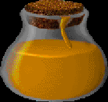

|  |
There is but one known Yrx'l still known to civilization, for mages have craved the blood of the eldritch tree, which provided the lifeblood to their more powerful spells. Now that all are extinct on Meridian's mainland and only one exists here, it is an unspoken rule that one shall leave the tree alone, and allow it to provide its life blood as it chooses.
|
||||